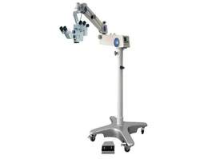

医院概况
- 医院简介
- 组织架构
- 历史沿革
- 医院环境
- 诊疗设备
- 资质荣誉
-
重庆市巴南区中医医院简介

重庆市巴南区中医院位于巴南区龙洲湾街道，是国家二级甲等中医医院。院本部龙洲湾院区占地面积30亩，房屋建筑面积21585平方米，开放床位467张，年接诊门急诊患者近30万人次，收治住院患者近20000人次。 医院现有职工总人数472人，其中卫生技术人员406人，有中高级卫生专业技术人员100余人；医院有重庆市名中医2人，巴南区名中医3人。
医院现拥有国家级中医特色专科两个：针灸理疗康复科、骨伤科；市级中医重点专科建设项目两个：针灸理疗康复科、儿科；市级中医特色专科一个：皮肤科。先后主导完成《穴位贴敷疗法在慢性胃炎治疗中的临床应用》、《皮下针刺法的创新及应用》、《中药辩证雾化吸入治疗小儿肺炎临床观察》等科研项目，连续十年荣获巴南区科技进步三等奖。医院设备总值3000余万元，配备16排螺旋CT、全自动生化分析仪、全自动化学发光仪、四维彩超等检查设备，以及骨质疏松治疗仪、中药熏蒸治疗仪、电针仪、微波治疗仪、肌力精细运动训练系统等中医诊疗设备，还配备了保胆取石硬镜、钬激光、经皮肾镜等微创设备。
近年来，医院荣获市级“五四”红旗团委、市级优秀青年文明号、全市院务公开先进单位、市级中医优质护理先进病房等荣誉称号，取得了全市青年职工技能大赛急救大赛二等奖、全市中医医院院徽院训院歌评比三等奖等奖项。
-
重庆市巴南区中医院组织架构
更新时间：2017-12-12
-
历史沿革
重庆市巴南区中医院前身是四川省重庆市巴县鱼洞镇卫生院。1956年10月成立巴县鱼洞镇卫生院之前称为巴县鱼百联合诊所，后经过四次更名： 1960年称巴县鱼洞人民公社医院，1961称巴县鱼洞溪医院，1965年称巴县鱼洞镇医院，1967年又还名为巴县鱼洞镇卫生院。1980年7月，经原四川省卫生厅批准成立巴县中医院。1981年2月，巴县鱼洞镇卫生院经改扩建挂牌成立巴县中医院，始有“中医院”之称谓。
1991年6月，巴县中医院由集体所有制单位转为全民所有制单位。
993年，原巴县大窝乡、石马乡撤销，两乡所属卫生院划归巴县中医院管理，分别更名为巴县中医院大窝分院、云篆山分院。1995年3月，重庆市行政区划调整和巴县撤县建区，巴县中医院正式命名为重庆市巴南区中医院。1996年6月，根据区政府文件精神，撤销中医院大窝分院和云篆山分院，设中医院大窝门诊部和云篆山门诊部。1998年1月，重庆市中医管理局批准重庆市巴南区中医院为国家二级乙等中医医院。
2001年8月，中医院经重庆市卫生局批准确定为非营利性医疗机构。
2001年9月，根据区委、区府关于乡镇建制调整要求，百节镇卫生院撤销划归中医院设为中医院百节门诊部，随后更名为百节社区卫生服务站。
2012年6月，中医院本部由鱼洞街道迁入龙洲湾街道，原址设为新市街分院。
2013年12月，成功创建国家二级甲等中医医院。
-
诊疗设备
- 西门子16排螺旋CT
- 东芝全自动生化分析仪
- 罗氏全自动化学发光仪
- GE三维彩超
- 骨质疏松治疗仪
 中药熏蒸治疗仪
中药熏蒸治疗仪- 电针仪
- 微波治疗仪
- 高倍手术显微镜
- 麻醉机
- 气压弹道碎石机
- 输尿管镜